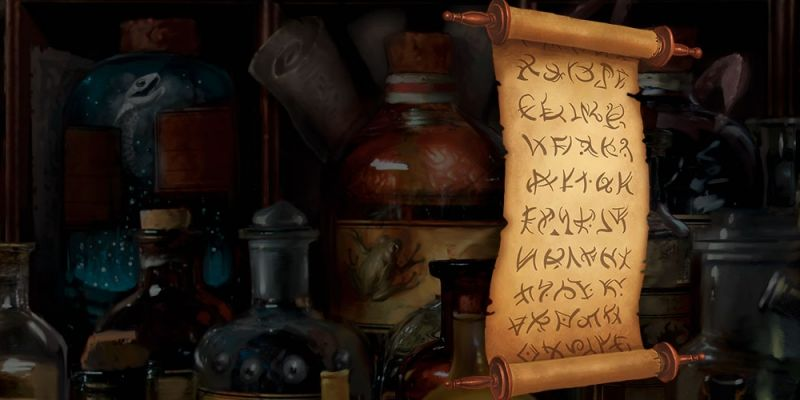

Classes de prestige
Beaucoup de concepts de personnages qui étaient autrefois des classes de prestige ou des voies de paragon dans les éditions précédentes de D&D sont maintenant des options disponibles aux personnages de niveau 1. En général, la conception du jeu vise un maximum de flexibilité et rend les options disponibles à l'ensemble des personnages. En tant que telles, les classes de prestige sont construites à partir d'une large gamme d'options du jeu de base pour représenter des voies spécialisées et des formations uniques.
Utiliser des classes de prestige
Une classe de prestige, même ses éléments de base, nécessite un haut niveau de compétence avant qu'un personnage puisse la maîtriser. Les classes de prestige peuvent conférer des pouvoirs perdus, permettre l'accès à une forme de magie impénétrable, accorder la maîtrise d'un style de combat exotique, ou être construit autour de la connaissance détenue par une société secrète.
Mécaniquement, une classe de prestige est une classe de personnage qui exige la même formation et exigence que toute autre classe. Vous entrez dans une classe de prestige par des règles de multiclassage normales, mais vous ne pouvez pas y entrer tant que vous n'êtes pas au moins de niveau 3 (et de nombreuses classes de prestige ont des exigences de niveau encore plus élevées). La plupart des classes de prestige exigent aussi de la part des personnages d'exécuter des actions spécifiques afin d'accéder à la classe. Vous ne pouvez pas avancer dans une classe de prestige tant que ses gardiens (typiquement ceux qui détiennent les clés de la classe) conviennent de vous accepter.
Une classe de prestige offre généralement l'accès à des mécanismes de jeu uniques disponibles seulement pour les membres de cette classe. Ces mécaniques reflètent des connaissances spécifiques, des secrets ou des techniques impossibles à maîtriser sans gagner le respect et la confiance de ceux qui possèdent déjà cette connaissance.
Rejoindre une classe de prestige
Afin de rejoindre une classe de prestige, vous devez d'abord en parler avec votre MD. Un MD peut choisir d'inclure ou d'interdire les classes de prestige dans le jeu. Typiquement, une classe de prestige vous oblige à entreprendre des actions spécifiques dans le jeu afin que votre personnage puisse commencer à intégrer cette classe. Si ces actions ne sont pas déjà possibles dans votre campagne, discutez avec votre MD pour intégrer celle qui vous intéresse.
Une classe de prestige utilise les règles normales du multiclassage. Lorsque votre personnage est prêt à prendre un niveau, vous pouvez choisir de gagner ce niveau dans une classe de prestige. Vos niveaux dans toutes vos classes, y compris les classes de prestige, sont additionnés pour déterminer le niveau de votre personnage.
Conditions
Prendre une classe de prestige à travers le multiclassage consiste à rassembler certaines conditions préalables, tout comme avec le multiclassage dans une classe standard. Vos valeurs de caractéristiques doivent satisfaire aux conditions préalables de votre classe actuelle ainsi qu'à celles de la classe de prestige pour que cette dernière vous soit éligible. Une classe de prestige nécessite un niveau minimum de personnage et une valeur minimum dans au moins une compétence, mais également de terminer une mission spécifique (trouver un objet magique, défaire un monstre, survivre à un défi particulier, et ainsi de suite) pour pouvoir être choisie.
Point d'expérience
Tout comme avec les règles standards pour le multiclassage, le coût en points d'expérience pour gagner un niveau est toujours basé sur votre niveau total de personnage, et non pas sur votre niveau dans une classe particulière.
Points de vie et dés de vie
Chaque classe de prestige spécifie les points de vie que vous gagnez. Vous additionnez les dés de vie accordés par l'ensemble de vos classes et classes de prestige pour déterminer votre réserve de dés de vie. Si ceux-ci sont du même type, vous les regroupez tout simplement ensemble.
Bonus de maîtrise et Maîtrises
Votre bonus de maîtrise est toujours basé sur votre niveau total de personnage, et non pas sur votre niveau dans une classe particulière. Une classe de prestige spécifie si elle accorde des maîtrises supplémentaires lorsque vous y accédez.
Capacités de la classe de prestige
Vous bénéficiez des capacités dont la classe de prestige dispose comme c'est le cas avec une classe normale. Parfois, une classe de prestige peut améliorer les capacités que vous avez obtenues d'autres classes. Si une classe de prestige accorde Conduit divin, Attaque supplémentaire ou Défense sans armure, cette capacité est traitée de la même manière que si vous l'aviez gagnée à partir de plusieurs classes standard.
Sorts
Certaines classes de prestige accordent la capacité de lancer des sorts. Chaque classe de prestige fournit des détails sur la façon de déterminer votre capacité globale de lanceur de sorts, en utilisant les règles pour les sorts des personnages multiclassés.
Scribe runique
Un scribe runique maîtrise les secrets des runes de pouvoir, d’anciens sceaux qui incorporent la magie fondamentale de la création. Les géants ont été les premiers à maîtriser la magie runique, bien que de nombreuses autres races aient finalement dérobé ou négocié ce pouvoir. La magie runique est extrêmement rare. Certains de ses secrets ont été perdus, et ce qu’il en reste est jalousement gardé. Quelques scribes runiques partagent leurs connaissances avec les autres, mais la plupart d'entre eux ne prennent de nouveaux étudiants que si cela leur permet d'avoir accès à une rune oubliée ou disparue. La classe de prestige du scribe runique utilise les règles de magie runique présentées à la fin de cet article.
Conditions
Afin de progresser en tant que scribe runique, vous devez remplir les conditions préalables suivantes, en plus des conditions de multiclassage de votre classe existante :
• Dextérité 13. Le scribe runique a besoin de doigts agiles pour maîtriser les motifs complexes d’une rune.
• Intelligence 13. La tradition runique exige une étude intense et de grandes connaissances.
• Maîtrise de la compétence Arcanes. La maîtrise des runes exige une compréhension des traditions arcaniques.
• Personnage de niveau 5. La magie runique ne se révèle qu’aux âmes puissantes, et vous devez être un personnage de niveau 5 avant de pouvoir gagner des niveaux dans la classe de prestige scribe runique.
• Accomplir une tâche particulière. Vous devez trouver une rune et la présenter à un scribe runique (PNJ) qui l'accepte en échange de vous guider dans les voies de la magie runique. Vous ne pouvez pas gagner plus de niveaux dans cette classe de prestige que ceux que possède votre tuteur. Vous pourriez avoir besoin de chercher des runes supplémentaires et les présenter à des scribes runiques plus qualifiés pour atteindre le niveau 5 dans cette classe de prestige.
Capacités de classe
Points de vie
DV : 1d8 par niveau de scribe runique
pv par niveau : 1d8 (ou 5) + votre modificateur de Constitution par niveau de scribe runique
Maîtrises
Outils : matériel de calligraphe, outils de maçon, outils de sculpteur sur bois
Jets de sauvegarde : aucun
Compétences : aucune
Équipement
La classe de prestige scribe runique ne confère aucun équipement spécial.
| - Emplacements de sorts - | ||||
|---|---|---|---|---|
| Niv | Capacité | 1 | 2 | 3 |
| 1 | Connaissance des runes, Magie runique | 2 | - | - |
| 2 | Découverte runique | 3 | - | - |
| 3 | Découverte runique | 4 | 2 | - |
| 4 | Rune vivante | 4 | 3 | - |
| 5 | Découverte Runique, Maîtrise des runes | 4 | 3 | 2 |
Connaissances des runes
Au niveau 1, vous apprenez les bases concernant l’écriture des runes, et êtes capable d'activer l’ensemble des propriétés d'une rune-maîtresse quand vous êtes liée avec elle. La section Magie runique ci-dessous contient des informations sur les runes-maîtresses ainsi que les descriptions et les propriétés des runes.
La première rune que vous maîtrisez est la rune que vous avez trouvé et présenté à votre tuteur afin d’accéder à cette classe de prestige. Votre accès à la classe inclut le processus de maîtrise des secrets de cette rune.
Magie runique
Les runes peuvent faire usage de votre propre pouvoir magique afin d'augmenter certains de leurs effets. Vous gagnez un nombre d’emplacements de sorts comme indiqué dans la table ci-dessus, mais cette classe de prestige ne donne pas accès à de nouveaux sorts connus. Au lieu de cela, en tant que scribe runique, vous pouvez dépenser vos emplacements de sorts pour renforcer vos runes, comme décrit dans la section Magie runique ci-dessous.
Afin de déterminer le nombre total de vos emplacements de sorts pour les besoin du multiclassage, ajoutez vos niveaux de scribe runique à vos niveaux de classe de lanceur de sorts. Par exemple, si vous êtes un scribe runique 4 / magicien 6, vous obtenez les emplacements de sorts d'un personnage de niveau 10, en plus d'obtenir les sorts mineurs et le grimoire d'un magicien de niveau 6.
Découverte runique
Vos études continues de la magie runique vous permettent de recréer les secrets de nouvelles runes sans avoir besoin de les découvrir auparavant. Aux niveaux 2, 3 et 5, choisissez une rune rare. Vous pouvez vous lier avec cette rune même si vous ne possédez pas la rune-maîtresse de celle-ci (voir la section Magie runique ci-dessous pour plus d'informations sur la rareté des runes et les runes-maîtresses).
Afin de vous lier à une rune de cette manière, vous devez consacrer un repos court entier à méditer sur la rune et rien d’autre. À la fin du repos court, vous êtes lié à la rune. Vous êtes considéré comme ayant toujours la rune sur vous pour ce qui est de déterminer si vous pouvez utiliser ses capacités. Vous pouvez passer un autre repos court à méditer sur la rune afin de mettre fin à votre lien.
Rune vivante
Les runes font partie du monde vivant, et vos études vous permettent de vous connecter à leur magie de façons de plus en plus puissantes. Au niveau 4, vous apprenez à intégrer la magie runique à votre identité, vous permettant ainsi d'améliorer votre corps et votre esprit. À la fin d'un repos long, vous pouvez choisir d'augmenter la valeur d'une caractéristique de votre choix de +2 ou d'en augmenter deux de votre choix de +1. A la fin de chaque repos long qui suit, vous pouvez modifier ce choix, réduisant les caractéristiques que vous avez déjà accrues et en améliorant d'autres (si vous avez choisi d'augmenter deux caractéristiques, vous pouvez choisir de n'en modifier qu'une seule).
Maîtrise des runes
Au niveau 5, vous êtes capable de maîtriser un éventail toujours plus grand de magie runique. Lorsque vous vous liez à une rune, vous pouvez choisir de le faire sans que cela ne compte dans votre limite d'objets magiques liés. Vous ne pouvez être lié qu'à une seule de ces runes de cette manière. Vous pouvez utiliser cette capacité à nouveau après avoir rompu le lien avec la rune précédente.
Magie runique
La magie runique permet à un personnage de débloquer la puissance contenue dans les symboles et les sceaux magiques. Mais ces marques n'ont pas toutes un pouvoir, seules les runes forgées dans les anciens jours de la création résonnent encore de la magie fondamentale du monde. Les runes fonctionnent en fait comme des objets magiques. Vous pouvez les découvrir, vous liez à elles, et utiliser leur magie de diverses façons. Cependant, contrairement aux objets magiques, seul un scribe runique peut utiliser tous les avantages qu'offre une rune.
Aperçu
Les runes sont de puissantes icônes que vous pouvez utiliser pour obtenir divers effets. Pour utiliser une rune, vous devez normalement trouver et conserver une rune-maîtresse. Une rune-maîtresse est un objet rare (un bijou ou une roche sculptée, un jeton magique, un éclat d'un matériau spécial, etc) gravé avec la rune et renforcé avec une magie vous permettant de déchaîner les effets de celle-ci. Ces effets sont divisés en deux catégories.
Les propriétés simples sont utilisables par toute personne qui se lie à une rune-maîtresse.
Les propriétés complexes sont utilisables uniquement par un personnage qui se lie à une rune-maîtresse et qui possède la capacité de classe Connaissance des runes.
Sauf indication contraire, vous devez avoir sur vous une rune-maîtresse pour pouvoir utiliser ses pouvoirs.
Trouver des runes
Une rune trouvée en tant que trésor est une rune-maîtresse, délicatement tracée sur un objet rare pour pouvoir servir à un futur scribe runique d'outil de formation pour débloquer son pouvoir. Chacune des runes présentées ci-dessous est décrite en tant que rune-maîtresse.
Les runes-maîtresses et les runes qu'elles contiennent sont plus ou moins traitées comme des objets magiques. Elles sont classées par rareté de rare à légendaire, et peuvent être intégrées dans une campagne si le MD décide de distribuer un trésor. Il n'y a pas de runes communes ou non-communes.
Acheter et vendre des runes
Traitez une rune-maîtresse comme un objet magique de même rareté pour ce qui est de l'acheter ou de la vendre. Tout comme avec d'autres objets magiques, le MD décidera si ces articles sont disponibles à l'achat dans sa campagne, et sous quelles conditions.
Identifier des runes
Les runes sont identifiées de la même manière que des objets magiques. La simple manipulation d'une rune-maîtresse provoque une forte sensation liée au type de la rune qui résonne dans l'esprit du personnage. Par exemple, toucher une rune-maîtresse qui contient la rune Kalt (la rune de froid) pourrait faire ressentir une soudaine sensation de froid suite à des visions de neige et de glace qui traversent votre esprit. Le sort identification révèle immédiatement les propriétés simples d'une rune-maîtresse. Vous pouvez également apprendre ses propriétés simples durant un repos court, en maintenant un contact physique avec la rune.
Runes et liens
Une rune exige toujours un lien pour pouvoir utiliser ses propriétés simples. Le lien avec une rune-maîtresse vous oblige à passer un repos court concentré sur celle-ci, tout en étant en contact physique avec elle. Cela ne peut pas être le même repos court que celui utilisé pour apprendre les propriétés de la rune. Cette focalisation consiste à recopier soigneusement la rune plusieurs fois, que ce soit avec de l'encre et un parchemin ou simplement par un tracé dans la boue. Si le repos court est interrompu, la tentative de lien échoue. Sinon, à la fin du repos court, vous gagnez une compréhension intuitive de la façon d'activer les propriétés magiques de la rune.
Une rune-maîtresse ne peut être liée qu'à une seule créature à la fois, et toutes les runes comptent dans votre limite d'objets magiques liés. Toute tentative visant à vous lier à un quatrième objet (magique ou rune) échoue, bien que la capacité de scribe runique Maîtrise des runes permette de se lier à une rune supplémentaire. Vous ne pouvez pas vous lier à plus d'une copie d'une rune. Vous pouvez mettre fin au lien avec une rune de la même manière qu'avec tout autre objet magique.
Runes-maîtresses
Voici quatre runes (sous la forme de runes-maîtresses) que vous pouvez utiliser dans votre campagne, juste assez pour équiper entièrement un scribe runique qui atteint le niveau 5.
Opale de la rune Ild
Rune-maîtresse, rare (nécessite un lien)
Cette opale triangulaire mesure environ 7,50 cm de côté et fait 1,50 cm d'épaisseur. La rune Ild - la rune de feu - miroite en son noyau. Saisir cet objet provoque durant une fraction de seconde une douleur ardente et brûlante qui vous traverse. Puis cette douleur disparaît rapidement, laissant alors place à une sensation de chaleur.
Enflammer (propriété simple). Par une action, vous inscrivez la rune Ild en utilisant des cendres sur un objet inflammable. Cet objet s'enflamme immédiatement. Pendant qu'il brûle, le feu s'étend de 30 cm autour de la rune que vous avez inscrite.
Dompteur de feu (propriété simple). Par une action, vous touchez une flamme et y inscrivez la rune Ild d'un mouvement de main. Cela provoque l'extinction immédiate de la flamme. Dans le cas d'un incendie conséquent, le feu est éteint dans un rayon de 3 mètres autour de vous. Vous pouvez étendre cette distance en dépensant un emplacement de sort lorsque vous utilisez la rune Ild de cette manière. Le rayon s'étend par 6 mètres par niveau d'emplacement de sort dépensé.
Ami du feu (propriété simple). Tant que vous êtes lié à cette rune, vous possédez une résistance aux dégâts de froid.
Combustion (propriété complexe). Par une action, vous inscrivez cette rune en utilisant des cendres sur une créature à votre portée en dépensant un emplacement de sort. La créature subit automatiquement 1d10 de dégâts de feu, plus 1d10 de dégâts de feu par niveau d'emplacement de sort dépensé.
Marque enflammée (propriété complexe). Durant un repos court, vous inscrivez cette rune en utilisant des cendres sur une arme de corps à corps ou de distance, ou sur des munitions (20 munitions maximum). L'arme ou les munitions se voient affubler d'une aura fantomatique faite de flammes jaune et infligent des dégâts de feu au lieu de dégâts perforants, tranchants ou contondants. En outre, vous pouvez dépenser un emplacement de sort lors de l'utilisation de cette propriété pour accorder à l'arme ou aux munitions un bonus aux jets d'attaque et de dégâts égal au niveau de l'emplacement de sort divisé par trois. Ces effets durent pendant 24 heures ou jusqu'à ce que vous utilisiez cette propriété à nouveau.
Attiseur de flammes (propriété complexe). Lorsque vous êtes lié à cette rune, vos attaques de feu sont plus meurtrières. Chaque fois que vous lancez les dés pour déterminer des dégâts de feu d'une attaque ou d'un sort que vous avez lancé, vous pouvez relancer ces dégâts et utiliser le résultat le plus élevé.
Orbe de la rune Stein
Ce morceau sphérique de granit est de la taille d'un poing humain. La rune Stein - la rune de la pierre - apparaît sur le globe comme des veines cristallines qui jouent sur toute sa surface. Lors de la première saisie, la pierre semble incroyablement lourde, comme si même un titan ne pourrait la soulever. Ce sentiment passe après un moment, vous permettant de déplacer la pierre avec facilité.
Pieds des irréductibles (propriété simple). Par une action, vous dessinez la rune Stein sur le sol, à vos pieds. Jusqu'à ce que vous vous déplaciez, vous avez un avantage à tous les jets de caractéristique et de sauvegarde afin de résister aux effets qui vous forcent à vous déplacer. En outre, toute créature qui se déplace dans un rayon de 3 mètres autour de vous doit réussir un jet de sauvegarde de Force DD 12 ou voir son mouvement prendre fin immédiatement.
Âme de la pierre (propriété simple). Lorsque vous êtes lié à cette rune, vous ne pouvez pas être pétrifié.
Secrets de la pierre (propriété simple). Par une action, vous inscrivez cette rune sur un mur ou une surface fait de pierre. Vous devinez alors l'emplacement et la taille de toutes les créatures se trouvant sur ou touchant cette surface dans un rayon de 9 mètres autour de vous, mais seulement au moment où la propriété est utilisée.
Marque de broyage (propriété complexe). Durant un repos court, vous inscrivez cette rune, en utilisant de la terre ou de la pierre broyée, sur une arme qui inflige des dégâts contondants. L'arme est alors enveloppée d'une aura brune fantomatique, et les dégâts contondants qu'elle inflige ignorent la résistance et l'immunité. Si vous obtenez le maximum de dommages sur le ou les dés de l'arme, la cible de votre attaque se retrouve à terre s'il s'agit d'une créature. En outre, vous pouvez dépenser un emplacement de sort lors de l'utilisation de cette propriété pour accorder à l'arme un bonus aux jets d'attaque et de dégâts égal au niveau de l'emplacement de sort divisé par trois. Ces effets durent pendant 24 heures ou jusqu'à ce que vous utilisiez cette propriété à nouveau.
Pas de la terre (propriété complexe). Lorsque vous êtes lié à cette rune, vous pouvez lancez fusion dans la pierre en tant qu'action bonus. Vous regagnez cette capacité après un repos court ou long.
Sphère écrasante (propriété complexe). Par une action, vous inscrivez cette rune en utilisant de la terre ou de la pierre concassée sur une créature à votre portée en utilisant un emplacement de sort. La créature doit réussir un jet de sauvegarde de Force (DD 12 + le niveau de l'emplacement de sort utilisé). En cas d'échec, la créature subit 2d8 de dégâts contondants, plus 1d8 de dégâts contondants par niveau de l'emplacement de sort dépensé et se retrouve à terre. En cas de jet de sauvegarde réussit, la créature ne subit que la moitié des dégâts et n'est pas mise à terre.
Fanion de la rune Vind
Brise réconfortante (propriété simple). Lorsque vous êtes lié à cette rune, vous ne pouvez pas étouffer ou vous noyer, et avez un avantage aux jets de sauvegarde contre les gaz toxiques, les poisons inhalés et autres effets similaires.
Saut du vent (propriété simple). Par une action, vous inscrivez la rune Vind dans l'air et vous vous envolez immédiatement sur une distance de 6 mètres. Si vous n’atterrissez pas à la fin de ce vol, vous chutez.
Poigne du vent (propriété simple). Par une réaction lorsque vous chutez, vous pouvez tracer cette rune dans l'air autour de vous afin de ne pas prendre de dommages causés par la chute.
Marque hurlante (propriété complexe). Durant un repos court, vous inscrivez cette rune dans l'air au-dessus d'une arme à distance. L'arme se couvre d'une aura bleue fantomatique et sa portée normale et maximale est doublée. Les attaques de l'arme ne souffrent pas de désavantage dû à sa portée. En outre, vous pouvez dépenser un emplacement de sort lors de l'utilisation de cette propriété pour accorder à l'arme un bonus aux jets d'attaque et de dégâts égal au niveau de l'emplacement de sort divisé par trois. Ces effets durent pendant 24 heures ou jusqu'à ce que vous utilisiez cette propriété à nouveau.
Sphère hurlante (propriété complexe). Par une action, vous inscrivez cette rune dans l'air entre vous et une créature que vous pouvez voir en utilisant un emplacement de sort. La créature doit faire un jet de sauvegarde de Force (DD 12 + le niveau de l'emplacement de sort). En cas d'échec, elle subit 2d8 de dégâts contondants, plus 1d8 de dégâts contondants par niveau d’emplacement de sort utilisé, et elle est repoussée en ligne droite sur 3 mètres par niveau d’emplacement de sort dépensé. En cas de réussite au jet de sauvegarde, la créature subit la moitié des dégâts et n'est pas repoussée.
Marcheur du vent (propriété complexe). Quand vous êtes lié à cette rune, vous pouvez lancer lévitation en tant qu’action bonus. Vous récupérez cette capacité après un repos court ou long.
Éclat de la rune Kalt
Rune-maîtresse, rare (nécessite un lien)
Ce long et mince fragment de glace est à peu près de la taille d'un poignard. La rune Kalt - la rune de glace – brille à l’intérieur du fragment. A la première saisie, le fragment émet un froid douloureux qui laisse votre main et votre bras engourdi. Cette sensation passe après un moment, ce qui vous permet de manier le fragment normalement.
Toucher gelé (propriété simple). Par une action, vous inscrivez la rune Kalt sur la surface d'un volume d'eau. L'eau gèle dans un rayon de 3 mètres autour de l'endroit où vous avez inscrit la rune.
Ami du gel (propriété simple). Quand vous êtes lié à cette rune, vous obtenez une résistance aux dégâts de feu.
Manteau de glace (propriété simple). Par une action, vous inscrivez la rune Kalt sur vous-même ou sur une autre créature en utilisant de l'eau. L'eau gèle instantanément en un manteau de glace protecteur qui ne gêne ni les mouvements ou ni les actions. La prochaine fois que la créature subit des dégâts contondants, tranchants ou perforants, les dommages sont réduits à zéro et le manteau de glace est détruit.
Sphère de congélation (propriété complexe). Par une action, vous inscrivez cette rune sur une créature à votre portée en utilisant de l'eau et en dépensant un emplacement de sort. La rune gèle instantanément, et la créature doit faire un jet de sauvegarde de Constitution (DD 12 + le niveau de l'emplacement de sort dépensé). En cas d'échec, la créature subit 2d8 de dégâts de froid, plus 1d8 de dégâts du froid par niveau de l'emplacement de sort dépensé, et sa vitesse de déplacement est réduite à 0 jusqu'à la fin de votre prochain tour. Sinon, la créature ne subit que la moitié des dégâts et sa vitesse n’est pas affectée.
Marque de glace (propriété complexe). Durant un repos court, vous inscrivez cette rune sur une arme de corps à corps ou à distance, ou sur des munitions (20 munitions maximum), en utilisant de l'eau. L'arme ou munitions se couvrent d’une aura blanche fantomatique et infligent des dégâts de froid au lieu de dégâts perforants, tranchants ou contondants. En outre, vous pouvez dépenser un emplacement de sort lors de l'utilisation de cette propriété pour accorder à l'arme ou aux munitions un bonus aux jets d'attaque et de dégâts égal au niveau de l'emplacement de sort divisé par trois. Ces effets durent pendant 24 heures ou jusqu'à ce que vous utilisiez cette propriété à nouveau.
Hurlement de l'hiver (propriété complexe). Quand vous êtes lié à cette rune, vous pouvez lancer tempête de neige par une action. Vous récupérez cette capacité après un repos court ou long.

Écrit par Mike Mearls, traduit par Garruth